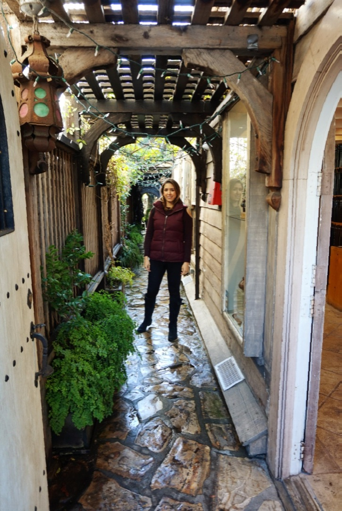

About Me
After earning a Bachelor of Science in Supply Chain and Logistics Technology with two minors: Purchasing and Organizational Leadership & Supervision, I have ventured into the realm of specialized taxes at a national tax advisory firm called alliantgroup. During this experience, I have helped managed a heavy volume of studies, leading to single deductions of over one million dollars for our clients. Previously, I interned at DHL Supply Chain where I controlled Bayer Cropscience’s daily freight operations as well as audited Bayer’s carriers’ invoices. As a student, I was involved in many organizations relating to supply chain management and logistics and volunteered my time to promote the Center for Logistics and Transportation Policy as a student ambassador. In my free time, I play as a violist in the Houston Sinfonietta and enjoy having my take at amature photography. Please enjoy my collection of photos from my most recent trip!
Connect with Me